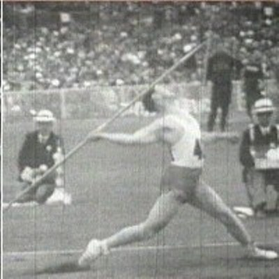

Fase 1

Fase 1: Løp
Først har spydkasteren vanligvis spydet i hvileposisjon
før han setter i gang med å løpe.
Her er målet å skape energi i form av bevegelse.
Fase 2

Fase 2: Tilbakeføring
Spydkasteren fører spydet bak kroppen for å gjøre spydet klart til kast.
Målet er å gjøre spydet klart for avgang i siste fase.
Fase 3

Fase 3: Krysstegfasen
Spydkasteren løper i kryssteg for å få riktig rytme i kastet og komme i posisjon med det som kalles
stembeinet (beinet han står på når han kaster i fase 4).
Fase 4
Fase 4: Utkast
Spydkasteren setter stembeinet i bakken og lar spydet fly gjennom lufta ved å overføre energien fra
de foregående bevegelsene til spydet. I denne fasen kan spydet akselerere fra 25 km/t til 110 km/t i
løpet av 12/100 sekund hos de beste kasterne i verden. Trykket på stambeinet er ca. ti ganger kroppsvekten.